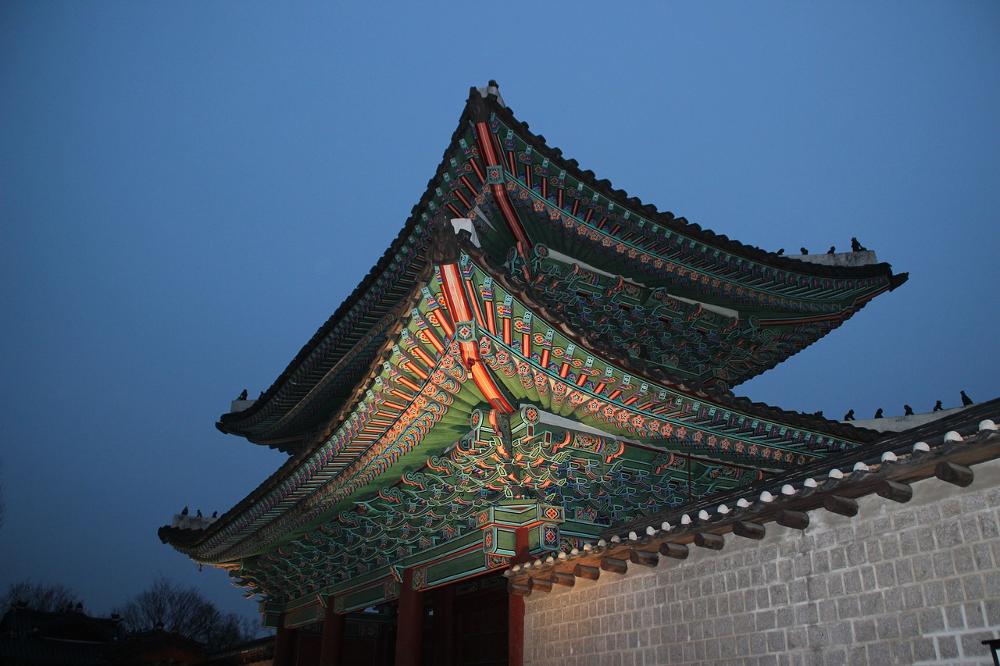

昌徳宮(チャンドックン)

わたしは韓国の番組やドラマに登場する風景やところせましにある傾斜がある坂、有名な観光地を見ることが好きなんです！
その好きなものを皆さんに共有できたらと思い、このブログに書きたいと思いま～す！
この写真にあるのは昌徳宮(韓国語ではチャンドックンと言う)です。
第3代王太宗により1405年に建てられた景福宮の離宮です。
また、 韓国の五大古宮のなかで唯一ユネスコ世界文化遺産に登録されている建造物で、広大な敷地内には13棟の宮殿があり
正殿である「仁政殿」や執務がおこなわれていた青い瓦の「宣政殿」、ソウルの宮殿に現存する最古の正門「敦化門」などが見どころです‼
四季折々の美しい景観と一緒に楽しむことができます。
住所
ソウル特別市鍾路区栗谷路99
アクセス
地下鉄３号線安国駅３番出口から徒歩５分
地下鉄1,3,5号線鍾路3街駅6番出口から徒歩約10分
営業時間
2~5月/9~10月 9:00～18:00
6~8月 9:00～18:30
11~1月 9:00～17:30
※休館日：月曜日
ソウル特別市鍾路区栗谷路99
アクセス
地下鉄３号線安国駅３番出口から徒歩５分
地下鉄1,3,5号線鍾路3街駅6番出口から徒歩約10分
営業時間
2~5月/9~10月 9:00～18:00
6~8月 9:00～18:30
11~1月 9:00～17:30
※休館日：月曜日